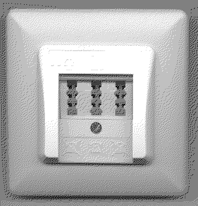
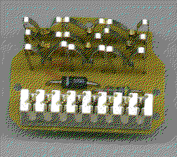
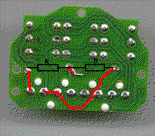

Previous
Next
TOC
Die erste TAE Dose beim Neuanschluß
Bekommt man heute einen neuanschluß von der Deutschen Telekom gelegt,
wird entweder eine 1. TAE Dose von der Telekom montiert oder an einer
vorhandenen TAE Dose wird ein sogenannter Passiver PrüfAbschluß (kurz
PPA) gesetzt.

Der passive Prüfabschluß besteht eigentlich nur aus zwei Bauteilen,
nämlich einem Widerstand mit ca. 470 Kiloohm und eine Diode vom Typ
1N5393 welche in Reihe geschaltet sind. Die beiden Bauteile sind
zwischen den Anschlüssen La und Lb angeschlossen.
Wenn man die Störungsstelle anruft, kann der beauftragte Techniker
von der Ortsvermittlung aus kurzerhand die Polarität wechseln und die
Leitung daraufhin in beiden Richtungen durchmessen. Alle nach der 1.
TAE Dose angeschlossenen Komponenten sind nämlich nicht mehr im zu-
ständigkeitsbereich der Deutschen Telekom und daher ist diese auch
nicht für Störungen von Fremdgeräten zuständig.


weiterblättern
Kapitel Die TAE Dose der Telekom, Seite 6